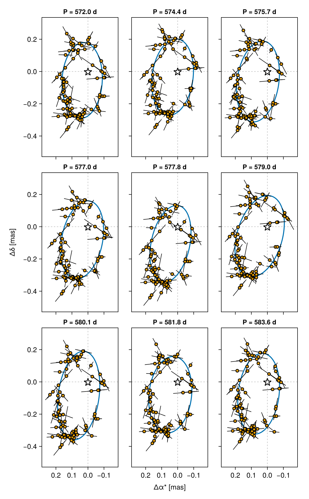

Fitting Gaia DR4 Pre-Release Epoch Astrometry
In June 2026 ESA pre-released Gaia DR4 epoch astrometry for 12 sources. Unlike the Gaia DR4 Simulation tutorial — which generates synthetic epoch astrometry from a scan law — this tutorial fits real Gaia epoch astrometry.
We will fit Gaia-4b, a ~11.8 M<sub>jup</sub> companion on a ~571 day orbit (Stefansson et al. 2025), from its along-scan measurements alone.
The data used here is derived from gaia-dr4-prerelease-epoch-astrometry_2026-06-26.zip.
- Detailed information: https://www.cosmos.esa.int/web/gaia/dr4-prerelease
- Data license: https://www.cosmos.esa.int/web/gaia-users/license
- Acknowledgement and citation instructions: https://gea.esac.esa.int/archive/documentation/GDR3/Miscellaneous/sec_credit_and_citation_instructions/
If you use this data in a publication, please follow ESA/DPAC's acknowledgement and citation instructions above.
Setup
using Octofitter
using Distributions
using CairoMakie
using CSV, DataFrames
using Statistics
using Random
using PigeonsLoading the data
The pre-release ships as a VOTABLE, which needs a little massaging before it can be used (see Where these files came from at the bottom of this page if you're curious). To keep this tutorial focused on the modelling, we ship ready-to-use CSV extracts of three of the twelve pre-released sources with the documentation — download them directly and read them with CSV.read:
| File | Source | source_id |
|---|---|---|
gaia4_epoch_astrometry.csv | Gaia-4 (G = 11.91) | 1457486023639239296 |
gaia_bh3_epoch_astrometry.csv | Gaia BH3 (G = 11.23) | 4318465066420528000 |
hd114762_epoch_astrometry.csv | HD 114762 (G = 7.15) | 3937211745905473024 |
This tutorial fits the first; the other two are described under Other pre-released sources below. The same code runs on all three, and on any table you extract yourself from the VOTABLE.
const GAIA4_SOURCE_ID = 1457486023639239296
const REF_EPOCH_MJD = 57936.375 # Gaia DR4 reference epoch, J2017.5
ccd = CSV.read(joinpath(@__DIR__, "gaia4_epoch_astrometry.csv"), DataFrame, comment="#")
println("$(nrow(ccd)) CCD-level observations, $(length(unique(ccd.transit_id))) transits")This gives one row per CCD observation: 1077 rows spread over 109 transits. The columns are:
| Column | Units | Meaning |
|---|---|---|
source_id | — | Gaia DR3 source identifier (constant within one file) |
transit_id | — | Groups the CCD observations belonging to one field-of-view transit |
epoch | MJD | Observation time (converted from TCB nanoseconds — see below) |
scan_pos_angle | degrees | Position angle of the scan, ψ |
centroid_pos_al | mas | Along-scan centroid offset from the reference point |
centroid_pos_error_al | mas | Formal along-scan centroid uncertainty |
ipd_error_al | mas | Image parameter determination uncertainty |
parallax_factor_al | — | Along-scan parallax factor (one value per transit) |
used_by_agis_al | bool | Whether this CCD observation was used in the astrometric solution |
outlier_flag | 0/1 | 0 where used_by_agis_al is true; GaiaDR4AstromObs skips rows with outlier_flag > 0 |
scan_pos_angle is the only angle-like column, and these CSVs carry it in degrees — the unit declared in the VOTABLE (unit="deg"), unmodified. GaiaDR4AstromObs takes degrees and converts to radians internally, so a table read straight out of the Gaia archive needs no unit conversion at all. There is no deg2rad step anywhere in this tutorial.
(This changed in Octofitter v9: v8's GaiaDR4AstromObs expected radians. If you are porting a v8 script, delete the deg2rad. you applied to scan_pos_angle — a scan angle silently read in the wrong unit is one of the easier ways to get a plausible-looking but wrong posterior.)
From CCD observations to transit-level data
Gaia records roughly 9 usable CCD observations per field-of-view transit (SM, then AF1–AF9). These are taken seconds apart, so for orbit fitting they carry essentially the same astrometric information but are not statistically independent — their errors share attitude and calibration systematics.
We therefore collapse each transit down to a single measurement. The reduction we recommend is the bootstrap reduction below: drop the CCD observations not used by AGIS, take the per-transit median along-scan position, and estimate its uncertainty by bootstrap-resampling the CCD observations within the transit, floored at the IPD uncertainty divided by sqrt(N_CCD).
This is deliberately not a built-in Octofitter function. The choice of reduction is a modelling decision that belongs to you and should be visible in your script, so copy these two functions in and adjust them if your data warrant it:
"CCD-level table filtered to AGIS-used rows, as a DataFrame."
load_dr4_ccd(path) =
subset(CSV.read(path, DataFrame, comment="#"), :used_by_agis_al)
"""
reduce_transits(ccd; n_boot=256) -> Dict{Int64,DataFrame}
Collapse the CCD-level table to one row per transit for each source. RNG is
seeded from the source_id and transits are processed in sorted order, so the
reduction is fully deterministic.
"""
function reduce_transits(ccd::DataFrame; n_boot::Int=256)
out = Dict{Int64,DataFrame}()
for src in groupby(ccd, :source_id)
sid = src.source_id[1]
rng = Xoshiro(sid)
rows = NamedTuple[]
for tr in groupby(sort(DataFrame(src), :transit_id), :transit_id)
pos = collect(Float64, tr.centroid_pos_al)
n = length(pos)
med = median(pos)
floor_err = median(tr.ipd_error_al) / sqrt(n)
if n == 1
err = tr.ipd_error_al[1]
else
meds = [median(rand(rng, pos, n)) for _ in 1:n_boot]
err = max(std(meds), floor_err)
end
push!(rows, (;
transit_id=tr.transit_id[1],
epoch=mean(tr.epoch),
scan_pos_angle=tr.scan_pos_angle[1],
parallax_factor_al=tr.parallax_factor_al[1],
centroid_pos_al=med,
centroid_pos_error_al=err,
n_ccd=n))
end
out[sid] = DataFrame(rows)
end
return out
endWhat each piece does:
load_dr4_ccdreads the CSV and keeps only the rows AGIS itself used (used_by_agis_al), which is Gaia's own outlier rejection at CCD level.- the median of
centroid_pos_alwithin a transit is the transit's along-scan position — robust to the one or two CCD windows that go bad in a transit. - the uncertainty is the standard deviation of
n_bootbootstrap-resampled medians: it measures the actual scatter of the CCD observations rather than trusting the formal per-CCD error, and so credits the averaging when the CCDs agree. - the floor
median(ipd_error_al) / sqrt(n)keeps a transit whose CCDs happen to agree very closely from being assigned an implausibly small error bar. scan_pos_angleandparallax_factor_alare taken from the first CCD row: both are per-transit quantities in the pre-release.parallax_factor_alis literally one value per transit;scan_pos_angledrifts by at most ~0.002° (a few arcseconds) across the ~45 s a transit takes to cross the focal plane, which moves the projected abscissa by ≲0.004 mas — an order of magnitude below the per-transit precision.- determinism: the RNG is seeded from the
source_idand transits are visited in sortedtransit_idorder, so re-running the script reproduces the same error bars exactly, and two different sources never share a random stream.
transit_level_data = reduce_transits(load_dr4_ccd(
joinpath(@__DIR__, "gaia4_epoch_astrometry.csv")))[GAIA4_SOURCE_ID]
println("$(nrow(transit_level_data)) transits over ",
round((maximum(transit_level_data.epoch) - minimum(transit_level_data.epoch))/365.25, digits=2),
" yr")For Gaia-4 this leaves 93 transits spanning MJD 57038.6 – 58843.2 (4.94 yr, a bit over three orbits at the published 571 day period).
The bootstrap error bar measures the observed scatter of the CCD observations within a transit. What it still does not model is the correlated attitude/calibration component shared within a transit, which no within-transit statistic can see. As always with pre-release data, check that your conclusions are not sensitive to the choice of reduction before publishing them — for instance by re-running with n_boot doubled, or against the per-CCD formal errors, and confirming the posterior does not move.
Building the likelihood
The astrometric nuisance parameters live in the likelihood's own @variables block. The frame zero-point offsets (ra_offset_mas, dec_offset_mas) absorb the difference between the DR3 catalogue position and the DR4 frame, and pmra/pmdec are the barycentre's proper motion.
gaia_obs = GaiaDR4AstromObs(
transit_level_data,
target = Photocentre, # what the catalogue source is: the blended, flux-weighted point
ref = Barycentre, # ...measured against the system barycentre
name="GaiaDR4",
variables=@variables begin
astrometric_jitter ~ LogUniform(0.00001, 10) # mas
ra_offset_mas ~ Normal(0, 1000) # frame zero-point (absorbs DR3<->DR4 offset)
dec_offset_mas ~ Normal(0, 1000)
pmra ~ Uniform(-1000, 1000) # mas/yr
pmdec ~ Uniform(-1000, 1000)
ref_epoch = $REF_EPOCH_MJD
end
)
# The observation carries data, references and variables only, so query the DR3
# solution explicitly when you need it:
sol = Octofitter._query_gaia_dr3(gaia_id=GAIA4_SOURCE_ID)
println("DR3 solution: plx=$(sol.parallax) pmra=$(sol.pmra) pmdec=$(sol.pmdec)")The parallax the likelihood uses comes from the system's own plx; there is nothing to forward into the observation's block.
The frame's plx places the system's barycentre, while what the epoch astrometry actually constrains is the parallax of the photocentre. For a compact orbit the two are the same to well within the errors. For a wide one they are not, and a model that pins plx tightly to a catalog value — which was itself fitted as a single-star photocentre solution — can produce a posterior with a long curved ridge that samplers struggle to explore. If your orbit is wide compared to the mission baseline, give plx room and check the plx–a–mass corner for that ridge.
The leading underscore is deliberate: the archive query layer will be replaced once the DR4 TAP endpoints are published, at which point the intent is that you pass a gaia_id and Octofitter fetches everything it needs. Until then, treat this call as a convenience whose signature may change.
The model
orbit_ref_epoch = mean(gaia_obs.table.epoch)
A = Body(
name="A",
variables=@variables begin
mass ~ truncated(Normal(0.644, 0.02), lower=0.1) # host mass [Msol] (Stefansson et al. 2025)
flux = 1.0 # the host sets the photocentre's flux scale
end
)
b = Body(
name="b",
about=A,
variables=@variables begin
mass ~ LogUniform(0.3mjup, 100mjup) # companion mass [Msol]; `mjup` is a constant
flux = 0.0 # dark companion => the photocentre is the host
a ~ Uniform(0, 10) # AU (Gaia-4b is at ~1.17 AU)
e ~ Uniform(0, 0.99)
ω ~ UniformCircular()
i ~ Sine()
Ω ~ UniformCircular()
θ ~ UniformCircular() # position angle at `epoch`
# `θ` + `epoch` is a phase parametrization the orbit constructor accepts
# directly, and an orbit's total mass comes from the hierarchy.
epoch = $orbit_ref_epoch
end
)
sys = System(
name="Gaia4",
bodies=[A, b],
observations=[gaia_obs],
variables=@variables begin
plx ~ truncated(Normal(sol.parallax, sol.parallax_error), lower=1)
end
)
model = Octofitter.LogDensityModel(sys; verbosity=4)There is no system-level M any more: each body carries its own mass, and an orbit's total mass comes from the hierarchy. A Photocentre target needs at least one body to declare a flux, which is what flux = 1.0 on A is for; flux = 0.0 on b makes the photocentre exactly the host, which is the right model for a dark companion.
Initializing and sampling
init_chain = initialize!(model, (;
plx = sol.parallax,
bodies = (
A = (; mass = 0.644),
b = (; mass = 11.8mjup, a = 1.17, e = 0.1, i = 1.0),
),
observations = (GaiaDR4 = (
astrometric_jitter = 0.1,
ra_offset_mas = 0.0,
dec_offset_mas = 0.0,
pmra = sol.pmra,
pmdec = sol.pmdec,
),),
))
octoplot(model, init_chain)Starting values nest under bodies= now, not planets=, and the host star is a body like any other, so its mass is initialized in the same place.
Astrometry-only orbit fits are strongly multi-modal, so parallel tempering is the safer choice here:
chain, pt = octofit_pigeons(
model,
n_chains=16,
n_rounds=8,
n_chains_variational=0,
variational=nothing,
)This fit runs under octofit_pigeons with a non-variational reference (n_chains_variational=0, variational=nothing), which is what an astrometry-only posterior wants. Dropping to HMC here is a real downgrade: seed it well (initialize! / startingpoints!) and check carefully for missed modes if you do.
Results
q(v) = round.(quantile(v, (0.16, 0.5, 0.84)), sigdigits=5)
a = vec(chain["b_a"])
e = vec(chain["b_e"])
inc = vec(chain["b_i"])
mb = vec(chain["b_mass"]) ./ mjup # Msol -> Mjup, for comparison with the paper
Mtot = vec(chain["A_mass"]) .+ vec(chain["b_mass"])
Pday = sqrt.(a.^3 ./ Mtot) .* 365.25
println("period [day] : ", q(Pday), " (Stefansson et al. 2025: 571.3 ± 1.4)")
println("a [AU] : ", q(a))
println("e : ", q(e))
println("i [deg] : ", round.(rad2deg.(quantile(inc, (0.16, 0.5, 0.84))), digits=1))
println("mass_b [Mjup]: ", q(mb), " (Stefansson et al. 2025: 11.8 ± 0.7)")The chain columns follow the bodies: b_mass and A_mass, both in solar masses.
And the usual plots:
octoplot(model, chain)# A single posterior draw, plotted against the Gaia along-scan data.
# As with RV, this only works for individual draws: the Gaia points are "detrended"
# using the parameters of that particular draw.
#
# `GaiaDR4AstromObs` declares an `:along_scan` plot channel, so the generic panel covers
# the abscissa-vs-time view — restrict the PosteriorSeries to the draw you want:
idx = rand(1:size(chain, 1))
octoplot(Octofitter.PosteriorSeries(model, chain; ii=[idx]))
# `gaiastarplot` is the sky-plane version of the same draw: the reflex track with each
# transit's residual re-projected along its own scan angle.
Octofitter.gaiastarplot(model, chain, idx)using PairPlots
octocorner(model, chain, small=true)Showing the degeneracy: one panel per period quantile
A single gaiastarplot shows one orbit passing through the transits, and it is very easy to read that picture as the answer. It is not: it is one draw out of a posterior that, for an astrometry-only fit, can be broad and is often multi-modal. The honest version of the figure is a grid — the same data, several times, each panel a different draw taken from across the period marginal.
gaiastarplot! draws into a cell of a figure you already have, so this is a loop over grid positions. Its third argument is the row index of the draw, which is what turns a set of quantiles into a set of panels:
# The period marginal. `a` is sampled and the total mass comes from the hierarchy,
# so the period is derived per draw rather than being a chain column.
Pday = sqrt.(vec(chain["b_a"]).^3 ./
(vec(chain["A_mass"]) .+ vec(chain["b_mass"]))) .* 365.25
# Nine draws spread over the marginal: for each quantile, the draw whose period
# is nearest to it. (`argmin` on |P - quantile| — the quantile itself is not a
# draw, and we want a real posterior sample, orbit and nuisance parameters and
# all, not an interpolation between two of them.)
probs = range(0.05, 0.95, length=9) # 5th to 95th percentile, nine panels
idxs = [argmin(abs.(Pday .- quantile(Pday, p))) for p in probs]
fig = Figure(size=(620, 1000)) # each panel is DataAspect: size the figure to match
axes = Axis[]
for (k, idx) in enumerate(idxs)
i, j = fldmod1(k, 3)
ax = Octofitter.gaiastarplot!(fig[i, j], model, chain, idx;
axis=(; title="P = $(round(Pday[idx], digits=1)) d", titlesize=13,
xlabel="", ylabel=""))
push!(axes, ax)
end
# Shared scale, and decorations only on the outside edges.
linkaxes!(axes...)
for (k, ax) in enumerate(axes)
i, j = fldmod1(k, 3)
hidexdecorations!(ax; ticks=false, grid=false)
hideydecorations!(ax; ticks=false, grid=false)
i == 3 && (ax.xticklabelsvisible = true)
j == 1 && (ax.yticklabelsvisible = true)
end
Label(fig[4, 1:3], "Δα* [mas]")
Label(fig[1:3, 0], "Δδ [mas]", rotation=pi/2)
colgap!(fig.layout, 8)
rowgap!(fig.layout, 8)
fig
Read it as a caption. Every panel shows the same 93 transits; only the orbit differs. Ellipses of visibly different shape, size and orientation all thread the same scan lines about equally well, because each transit constrains the source's position along one direction — the measurement is a line, not a point — and the frame zero-point, proper motion and jitter parameters absorb a good deal of what is left over. The differences between panels are the posterior width, drawn in the space where you can judge them, and a single best-fit track cannot show you any of it.
Because the panels share a scale, they are directly comparable. Read both what changes and what does not: for Gaia-4 the period is pinned to about ±1% across the whole 5th-to-95th percentile range, so all nine titles are nearly the same number, while the eccentricity and the orientation of the ellipse wander noticeably. That is the useful, publishable statement — this is tight, that is not — and it is exactly what the grid makes visible. On a system with only half an orbit of coverage — Gaia BH3, below — expect the tracks themselves to disagree far more.
We would encourage showing a grid like this alongside the usual single best-fit track. It costs one extra figure and it tells the reader what the posterior actually supports, which a MAP orbit drawn on its own quietly overstates. The same loop works for any parameter you are worried about — take the quantiles of b_mass or b_e instead of the period, or of b_i if the inclination is what your mass depends on.
The grid is a visual check, not a replacement for the corner plot: it shows how different the orbits look, while octocorner shows how the parameters covary. They answer different questions and it is worth showing both.
Other pre-released sources
Two more of the twelve pre-released sources are shipped with the documentation as CSVs in the same format, so the code above runs on them unchanged — only the file name and source_id differ:
const BH3_SOURCE_ID = 4318465066420528000
bh3 = reduce_transits(load_dr4_ccd(
joinpath(@__DIR__, "gaia_bh3_epoch_astrometry.csv")))[BH3_SOURCE_ID]
const HD114762_SOURCE_ID = 3937211745905473024
hd114762 = reduce_transits(load_dr4_ccd(
joinpath(@__DIR__, "hd114762_epoch_astrometry.csv")))[HD114762_SOURCE_ID]Gaia BH3 (4318465066420528000, α = 294.82785°, δ = +14.93092°, G = 11.23) is the nearby dormant black hole of Gaia Collaboration et al. (2024): a ~33 M⊙ companion to a metal-poor giant on a ~11.6 yr orbit. The pre-release gives 631 usable CCD observations over 64 transits; after reduce_transits that is 63 transits spanning MJD 56957.6 – 58818.6 (5.10 yr), which is only about half an orbital period — a good example of a system where the orbit is not closed by the DR4 baseline alone and where the priors on a and mass matter. Its DR3 RUWE is 3.41.
HD 114762 (3937211745905473024, G = 7.15, ϖ = 26.2 mas) is the historically interesting one: the companion announced by Latham et al. (1989) as the first extrasolar-planet candidate, whose minimum mass of ~11 M<sub>jup</sub> turned out to be a low-mass star seen nearly face-on once Gaia astrometry constrained the inclination (Kiefer 2019). Its DR3 RUWE is 3.16 and it carries a DR3 non-single-star solution, so there is a real astrometric signal here to recover, and a published astrometric orbit to check a fit against.
It is also the cautionary example of the three. Being bright, it loses a much larger fraction of its CCD observations to AGIS: 879 rows over 89 transits, of which only 558 rows over 63 transits survive used_by_agis_al (MJD 57042.4 – 58840.0, 4.92 yr). Twenty-six transits vanish entirely. Whether that rejection pattern is uncorrelated with the orbit is exactly the kind of thing to check before believing a result on pre-release data.
Both are brighter and better characterised than most of the remaining pre-released sources, which run down to G ≈ 20 and include at least one quasar — targets chosen to exercise the pipeline rather than to have orbits fitted to them.
Where these files came from
You do not need this section to follow the tutorial — it documents how the three CSVs were derived from the official VOTABLE, so the reduction is reproducible. We expect the eventual DR4 release to be reachable through a friendlier query interface, at which point this step should disappear.
The pre-release VOTABLE stores one row per transit, with several columns holding arrays of 10 values — the SM sample followed by AF1–AF9. obs_time_tcb, scan_pos_angle, centroid_pos_al, centroid_pos_error_al, ipd_error_al and used_by_agis_al are all array-valued, while parallax_factor_al, ra0 and dec0 are per-transit scalars.
To get the flat, one-row-per-CCD-observation table Octofitter expects:
- Select the rows for your
source_id. - Flatten the array-valued columns, broadcasting the per-transit scalars across the 10 CCD entries. Drop any CCD entry where a required quantity is masked.
- Convert the time:
obs_time_tcbis in nanoseconds since JD 2455197.5 (TCB), sojd = 2455197.5 + obs_time_tcb / 1e9 / 86400andmjd = jd - 2400000.5. (Note this differs from the Gaia BH3 paper's published table, where the equivalent column is already in days.) - Set
outlier_flag = 0whereused_by_agis_alis true, else1.
That is the whole conversion. In particular there is no angle unit conversion: scan_pos_angle is carried through in degrees exactly as the VOTABLE declares it (unit="deg"), which is what GaiaDR4AstromObs ingests.
For Gaia-4 (source_id 1457486023639239296) this yields 1077 CCD observations over 109 transits, of which 824 are flagged as used by AGIS. The reference point for centroid_pos_al is ra0 = 209.506326888 deg, dec0 = 31.695499700 deg; these values, along with the per-file counts and the full conversion, are recorded in the comment header of each CSV.
The 12 pre-released sources are 2237987199365376, 2309425390592896, 10973744521070720, 20694084440761600, 60730287810150016, 435469040545191680, 1457486023639239296 (Gaia-4), 1663617687609809280, 3926186255616949504, 3937211745905473024 (HD 114762), 4181040337841125632 and 4318465066420528000 (Gaia BH3).
docs/src/astrom.dat is the separate table published alongside the Gaia BH3 paper, already in the flat one-row-per-CCD-observation form rather than the array-valued pre-release form. The two agree where they overlap: for a shared transit_id, the paper table's scan angles reproduce the pre-release scan_pos_angle to five significant figures — both in degrees. Re-basing that example onto the pre-release file has not been done.